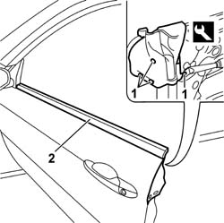

7005D26 FRONT SIDE DESCENDING WINDOW GLASS SCRAPER (OUTER) R R
- Path
- Procedures > 70 FITTINGS > 7005 PASSENGER COMPARTMENT FRONT SIDE DOORS > 7005D FRONT SIDE DOOR WINDOW GLASSES > 7005D26 FRONT SIDE DESCENDING WINDOW GLASS SCRAPER (OUTER) R R
- Kind
- repair procedure (removal / refitting; the operation number is the code)
- Applies to
- all engines; all production periods
- Interactive page
- https://sloeber94.github.io/elrnDB-aGt/en/#/125001784
Applies to: all engines; all production periods
 Removing
Removing
 Refitting
RefittingLower the window completely.
Op. 7005E12 CORNER COVER OF ONE FRONT SIDE DOOR, LH OR RH R R
Op. 7005C44 INTERIOR HANDLE PANEL - R R
(for driver's door)
Op. 7005M12 PASSENGER SIDE FRONT DOOR ELECTRICALLY OPERATED WINDOW SWITCH - R R
(for passenger door)
Op. 7005E08 FRONT SIDE DOOR INTERIOR PANEL R R
1. Remove the retaining plugs using a knife.
 | Name | Country |
|---|---|---|
1 | Scraper blade | 1.823.015.000 |
2. Release the glass scraper.

Applies to: all engines; all production periods
Refitting
RemovingCheck that the weather strip is undamaged.
Working with the window completely lowered, fit the outer glass scraper taking care to inser the front section below the triangular seal for the door mirror.
Continue fitting the glass scraper following the profile of the door.
Remove the protection for the double sided tape and stick the glass scraper seal by the side of the door having cleaned the area first.
Secure the glass scraper using the retaining plugs.
Op. 7005E08 FRONT SIDE DOOR INTERIOR PANEL R R
Op. 7005M12 PASSENGER SIDE FRONT DOOR ELECTRICALLY OPERATED WINDOW SWITCH - R R
(for passenger door)
(for driver's door)
Op. 7005C44 INTERIOR HANDLE PANEL - R R
Op. 7005E12 CORNER COVER OF ONE FRONT SIDE DOOR, LH OR RH R R.
Topics linked from this page (5)
- 7005C44 INTERIOR HANDLE PANEL - R R
- 7005E08 FRONT SIDE DOOR INTERIOR PANEL R R
- 7005E12 CORNER COVER OF ONE FRONT SIDE DOOR, LH OR RH R R
- 7005M12 PASSENGER SIDE FRONT DOOR ELECTRICALLY OPERATED WINDOW SWITCH - R R
- 7005M14 SWITCH UNIT CONTROLLING ELECTRIC WINDOWS REAR VIEW MIRRORS AND DOOR LOCK ON DRIVERS SIDE FRONT DOOR R R
Topics that link to this page (15)
- T01 WIND NOISE FROM THE FRONT DOORS
- V05 FRONT DOOR WATER PENETRATION
- 7005C10 FRONT DOOR OUTER HANDLE - R R WITH DOOR PANEL REMOVED
- 7005C11 FRONT SIDE DOOR OUTSIDE HANDLE R R
- 7005C42 FRONT SIDE DOOR BARREL/LOCK CONNECTING LINKAGE - R R WITH DOOR PANEL REMOVED
- 7005C43 LINK CONNECTING FRONT SIDE DOOR BARRELS/CATCH - R+R
- 7005D14 FRONT SIDE DOOR DESCENDING WINDOW GLASS - R R WITH DOOR PANEL (AND MOUNT FRAME) REMOVED
- 7005D15 FRONT SIDE DOOR DESCENDING WINDOW GLASS R R
- 7005D24 FRONT DOOR WINDOW REAR GUIDE - R R
- 7005D25 FRONT DOOR WINDOW REAR GUIDE - R R
- 7005M20 FRONT SIDE DOOR ELECTRIC WINDOW SYSTEM - R R WITH DOOR PANEL/SUPPORT FRAME REMOVED
- 7005M21 FRONT SIDE DOOR ELECTRICALLY OPERATED WINDOW - R R
- 7005N20 FRONT SIDE DOOR LOCK MOTOR/CATCH ASSEMBLY - RR WITH DOOR PANEL AND SUPPORT FRAME REMOVED
- 7005N21 FRONT SIDE DOOR LOCK MOTOR-LOCK ASSEMBLEY-R R
- 7205E36 STRIPPING FRONT SIDE DOOR